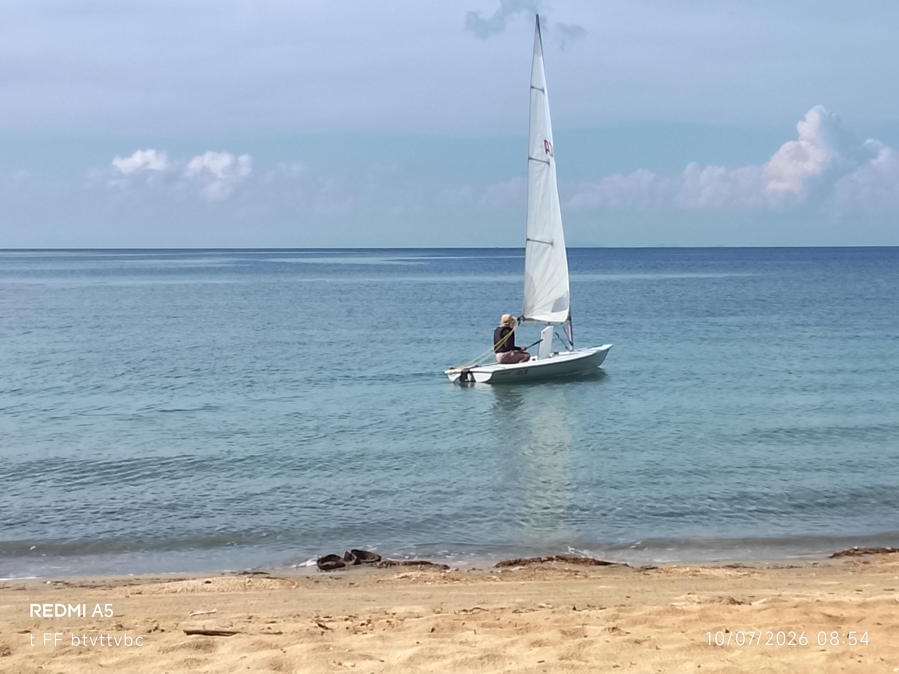
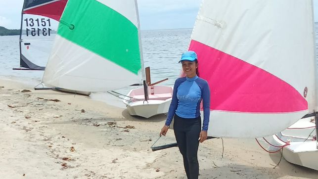

Instructors
Lessons are conducted in English with priority on personal safety.
Gerardo Gala

Intermediate dinghy sailing with an emphasis on boat handling and racing.
usSailing.org Member - 2012.
4 years of experience in teaching sailing.
6 years of experience in sailing Sunfish, Open Skiff, and ILCA 7.
Served 2 years as a Race Officer at Lake Canyon Yacht Club in Canyon Lake, TX.
Divine Orciga

Beginner dinghy sailing with attention to safety.
5 months of experience in teaching sailing.
2 years of experience in sailing Sabot and Open Skiff.
14 years of teaching experience at ADT Montessori School.
Bachelor's Degree from Bicol University, Bicol, Philippines.